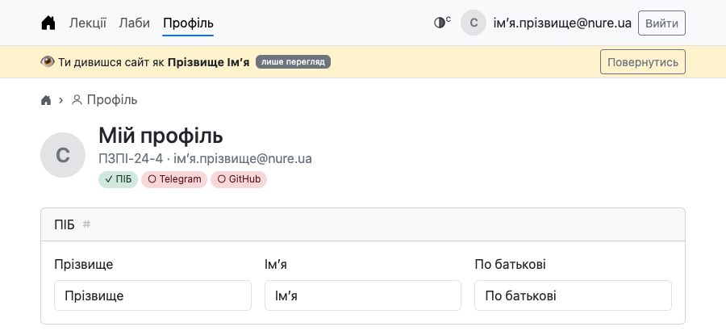
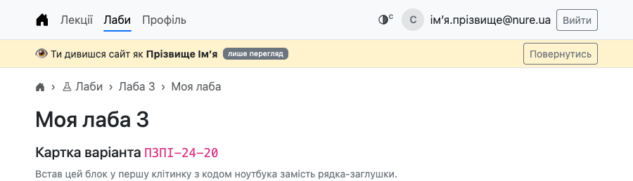

Профіль студента до його першого входу
дев-сайт, студент № 20, імена замальовано- Що видно
- Група й пошта під заголовком, позначка «✓ ПІБ», три поля заповнені. Лишається Telegram.

python-labs · T372 · список потоку ODS
база ods на ноутбуці · кода в git не додано · 20.11.2026, ніч · імен і пошт на цій сторінці нема
Усі 48 студентів уже мають профіль з ім’ям і свою картку в кожній лабі. Поки що — в базі на ноутбуці: сайту на сервері ще нема, профілі поїдуть туди разом із копією бази.
nure-students: знімок ЦІСТ від 04.09, увесь факультет із поштами.users у копії базикрок 3 в оголошеннічи номери ті самі, що в лабах 1–2Шлях студента став коротшим на два кроки: сайт більше не тримає його в «очікує» і не питає номера.
ПЗПІ-24-NNsites/ods/data/students/, поза git/students48 профілів.dev/.drafts/T372/; повторний запуск нічого не міняє.ПЗПІ-24-N (анг); у профілі — ПЗПІ-24-N, як у твоєму списку: за цією назвою сайт знаходить потік і картки.@nure.ua поза списком, як і раніше, стає «очікує».

ods.labs.in.ua ще не відповідає: адреса дивиться на сервер, але сайту там нема. Тож «на сайті» зараз означає базу ods на ноутбуці — ту, з якої робиться копія для сервера.
Рецепт із T367 брав п’ять колекцій. З рядком users на сервер їдуть і 48 профілів; картки вже несуть, чиї вони.
має надрукувати: guide 47 · media 150 · lab_pages 27 · lab_shapes 5 · variants 310 · users 48 — перевірено на тимчасовій базі. Готовий до копіювання рецепт — у report.md тікета.
ADMIN_EMAILS при першому вході.Усе це — ядро, тож працює на обох сайтах; два останні рядки — лише ods.
| Механізм | Що дає | Стан |
|---|---|---|
Вхід Google, лише @nure.ua | пошта, ім’я з акаунта, фото; новий користувач — «очікує» | працює |
Імпорт списку на /students | профіль зі статусом «студент», ПІБ, група | працює для двох форм: список групи з ЦІСТ і учасники курсу з DL |
| Бот: посилання з профілю | Telegram студента — напевно | працює |
| Нік Telegram у профілі, вставка листування | Telegram — здогадом | працює |
| Імена в Zoom | відвідування й транскрипти пар | працює |
| ods: номер у списку = картка | варіант у всіх лабах | закріплено наперед |
| ods: переслане боту | автор за прив’язаним Telegram; інакше здогад за карткою, ніком, ім’ям | код є справжнього Telegram ще не було |
Списки груп: ПІБ, залікова, контракт, пошта. Сторінка входу віддає 403 усім ззовні, серверу теж. Публічний розклад працює, але людей у ньому нема.
Що робити — питання до тебе в nure-students T125: прохання до ЦІТ про доступ із сервера.
База бота nure-students: увесь факультет, перевірка двічі на день; остання вдала — 14.10. Найсвіжіше, що є.
Дістатись можна лише через ssh vv3; ключ питає пароль.
04.09 у базі nure_students і 07.09 у nure_students_dev: 1341 студент факультету, усі з поштою.
Старіють із відрахуваннями й переведеннями; на цей семестр вистачило.
People API під твоїм токеном: 10 478 акаунтів домену, ім’я й пошта, за кілька секунд. Груп у каталозі нема.
Код і токен — у nure-students. Сьогодні не викликала: не знадобилось; стан — за записом від вересня.
ПІБ, пошта й група тих, хто записався на курс у DL.
Вставкою тексту на /students.
При першому вході сайт підставляє прізвище й ім’я з акаунта, якщо профіль порожній.
Без по батькові й без групи; для тих, кого нема в списку.
@nure_students_bot знає, чий який Telegram, але веде потоки цього року й магістрів. ПЗПІ-24 там нема.
Пошт у локальній копії цієї бази нема: лише ПІБ і Telegram.
| Де | Доступ |
|---|---|
Mongo на ноутбуці: nure_students, nure_students_dev, nure_timetable, python_labs, ods | є читаю все |
| Сайт python на сервері | є через API з токеном агента: списки читаю, людей не створюю |
| Сайт ods на сервері | сайту ще нема токен уже лежить |
| Сервер: бази, деплой | нема ssh питає пароль ключа |
| ЦІСТ | нема ні в кого ззовні |
| Каталог Google | токен на диску є без твого слова не чіпаю |
Текст із T370, змінено два рядки: третій крок і за що бонус. Дату дедлайну лаби 3 впишеш сам. Бонус — за T373 Q1 «a»; скажеш інакше — перепишу.
📢 Сайт курсу запрацював: https://ods.labs.in.ua Що зробити — 5 хвилин: 1️⃣ Увійти з поштою @nure.ua 2️⃣ У профілі прив’язати Telegram-бота 3️⃣ Лаби → Лаба 3 → «Моя лаба»: там уже твоя картка варіанта — перевір, що номер твій 🎁 Хто увійде й прив’яже бота до неділі 22.11, 23:59 — +1 бонусний бал 📌 Лаби 1 і 2 — як і раніше: файл ноутбука мені в особисті. Вдруге на сайт нічого завантажувати не треба: я сам перенесу ваші файли, з часом вашого повідомлення ⏰ Дедлайн лаби 2 — субота 21.11, 23:59 🧪 Лаба 3 — уже на сайті, і здаємо її теж там: «Моя лаба» → перетягнути файл ноутбука. Дедлайн — <п’ятниця 04.12, 23:59>
Чому так: студент нічого не обирає, тож крок — «перевір», а не «назви». Хто побачить не свій номер, напише тобі до першої здачі, а не після.
| Що | Як | Результат |
|---|---|---|
| Кожен із 48 на сайті | список сайту проти файла: статус, група, ПІБ, картка в кожній із п’яти лаб | 0 розбіжностей |
| Очима студента | № 1, 20 і 48: профіль, свої картки, «Моя лаба» 3 | так картки в лабах 1–3; лаби 4–5 сховано |
| Сторінки в браузері | headless Chrome на дев-сайті, студент № 20: «Профіль», «Лаби», «Моя лаба» 1 і 3 | знімки вище |
| Повторний запуск | той самий скрипт удруге | нічого не змінив 48 без змін, 240 «ті самі» |
| Копія бази | рецепт із рядком users на тимчасовій базі | 48 і 240 жодної картки за тим, кого в копії нема |
| ЦІСТ і каталог Google | огляд субагентом; тікети nure-students T124 і T76 прочитано самою | за записами |
users./students, що він «студент», а не «очікує»./students читає список курсу й бере імена з довідника «пошта → ПІБ» (S) — T373 Q4.nure-students T125 — прохання до ЦІТ про доступ до ЦІСТ із сервера.клік або Esc — закрити